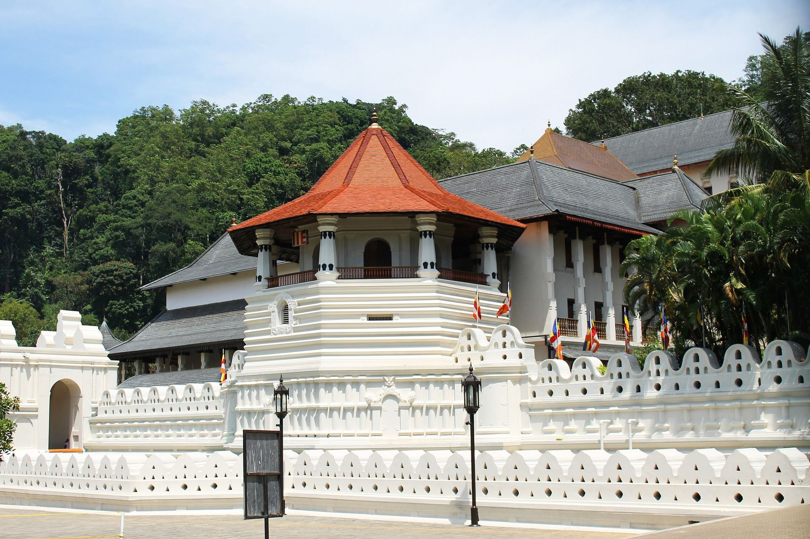
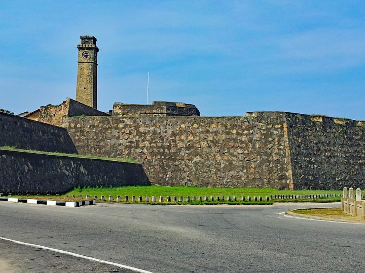

1. Sigiriya Rock Fortress

Sigiriya, also known as the Lion Rock, is a UNESCO World Heritage Site and one of Sri Lanka’s most iconic landmarks. The climb to the top reveals ancient frescoes, water gardens, and breathtaking views.
Highlights
- Climbed to the summit of Sigiriya Rock
- Explored the ancient water gardens
- Admired the beautiful Sigiriya frescoes
2. Kandy – Temple of the Tooth

Kandy, the cultural capital of Sri Lanka, is home to the sacred Temple of the Tooth Relic. The city is surrounded by hills, tea plantations, and a serene lake, making it a spiritual and cultural hub.
Highlights
- Visited the Temple of the Tooth Relic
- Walked around Kandy Lake
- Enjoyed a traditional Kandyan dance performance
3. Galle Fort

Galle Fort is a historic coastal fortress built by the Portuguese and later expanded by the Dutch. It combines colonial architecture, vibrant streets, and stunning ocean views, making it a perfect mix of history and beauty.
Highlights
- Walked along the ramparts of Galle Fort
- Explored colonial-era streets and shops
- Watched the sunset over the Indian Ocean